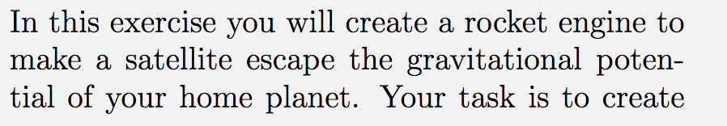
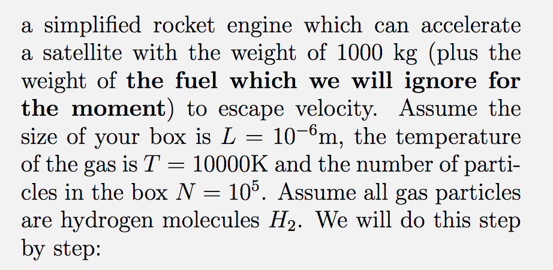

Forrige side🙂 🙁IntroduksjonFORUM
Oppgave 1A6 som er en av innleveringsoppgavene går ut på akkurat dette. I løpet av dette forelesningsnotatet vil du lære det du trenger for å løse denne oppgaven. Utdrag fra oppgave 1A6:
 
Trykk her for å brainstorme litt samt friske opp litt statistikk
Har du brainstormet og sendt inn skjemaet? Nei Ja